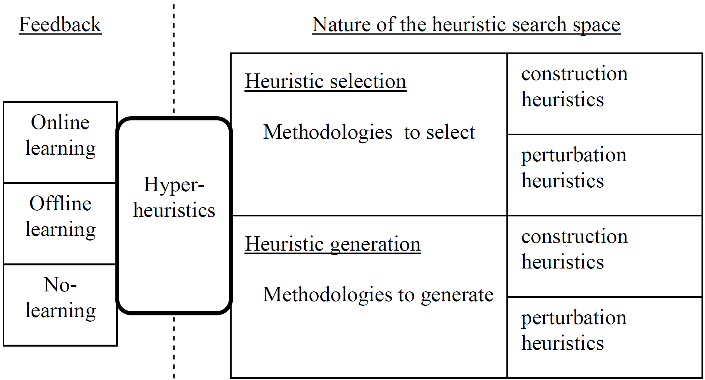

Hyper-heuristics are problem-independent generic solvers which have been successfully applied to a wide range of combinatorial search problems both from academia and real-world, such as timetabling, scheduling, routing, rostering, cutting and packing.
The studies on this field is mainly considered under two categories (Figure 1), namely Selection and Generation Hyper-heuristics.
Selection Hyper-heuristics operate by automatically choosing (low-level) heuristics from an existing heuristic set while the latter type focuses on generating heuristics from scratch based on predefined components.
These hyper-heuristics can have certain learning capabilities by incorporating Offline and Online learning.
Offline refers to learning before a hyper-heuristic run, mostly in the form of un-/supervised learning.
Online is about learning while a problem (~instance) is being solved, likely to be based on reinforcement learning.
It is also possible to design hyper-heuristics without learning.
Besides the learning aspect, the type of heuristics may differ as constructive and perturbative heuristics.

The aim of this stream is to gather researchers studying hyper-heuristics to share their research on all the aforementioned hyper-heuristic variations as well as the strategies developed to support hyper-heuristics.
Dr. Mustafa Misir (if any questions, contact)
College of Computer Science and Technology, Nanjing Uni of Aeronautics and Astronautics, China
mmisir@nuaa.edu.cn